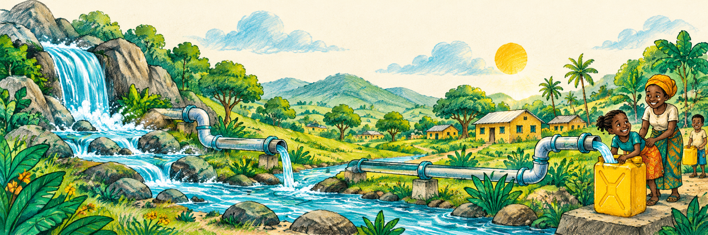

Guide clean water.Change what happens next.

Five little journeys. Take them one connection at a time.
Levels 1–2 count rotations. Levels 3–4 use a timer. Level 5 uses both. The timer starts on your first action. Failed flows preserve your board. After a limit, keep practicing or restart the challenge.